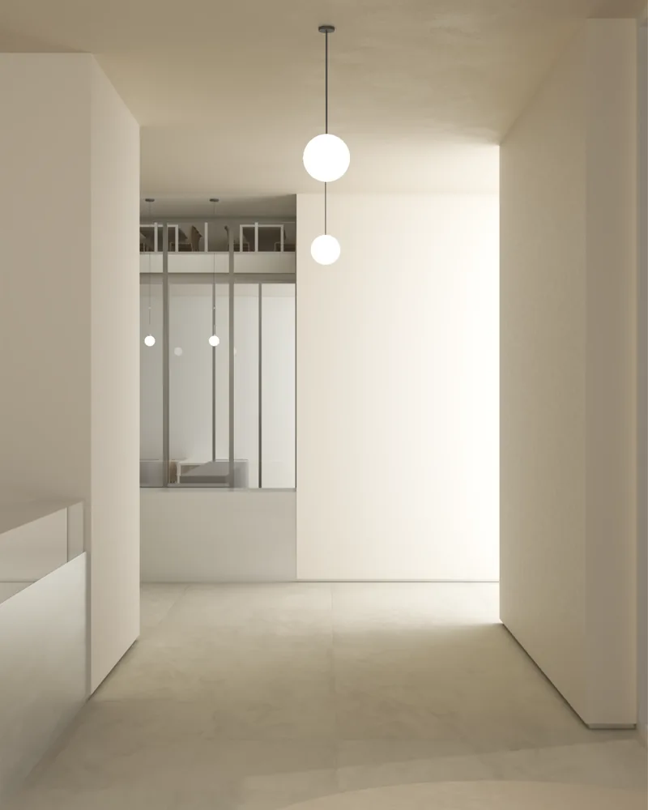
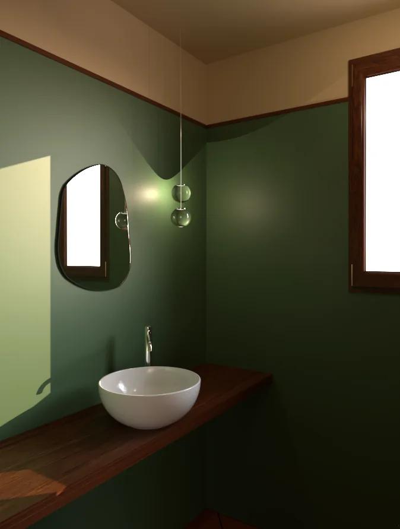

Projects
Apartments, interiors, bars and restaurants, villas, competitions and experimental studies of form.

Residential interiors
Castelfranco Emilia, Italy
2027, under construction

Two apartments
Historic centre, Modena, Italy
2027, design
with Alessandro Orrea, geometra

Competition
Via De Gennaro, Naples, Italy
2026

Detached villa
Reggio Emilia, Italy
2026

Bar and restaurant
Corso Canalgrande, Modena, Italy
2025

Apartment
Via Malmusi, Modena, Italy
2025
with tilde studio

Competition
Corso Matteotti, Fano, Italy
2025

Apartment
Via Fusco, Modena, Italy
2022

Ceramic jewellery
2026

Titanium jewellery
2022